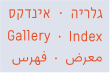
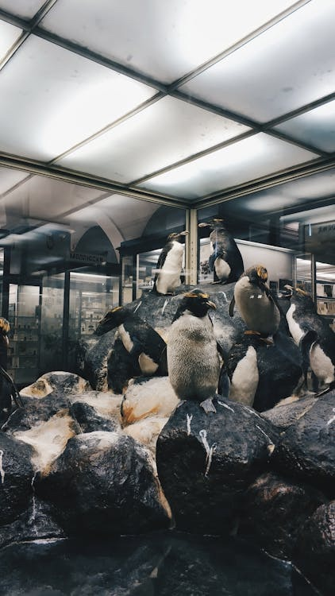
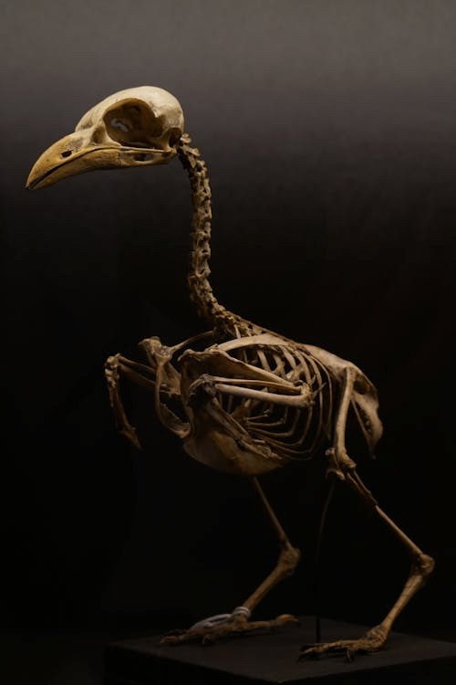
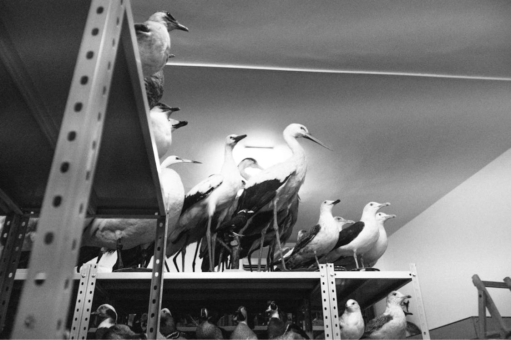
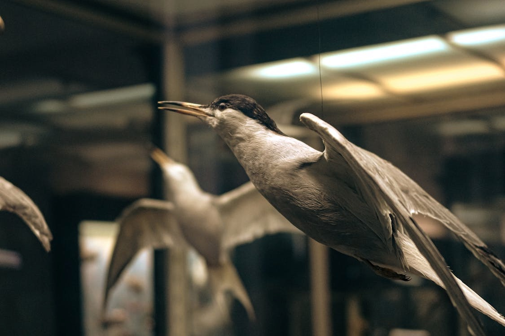
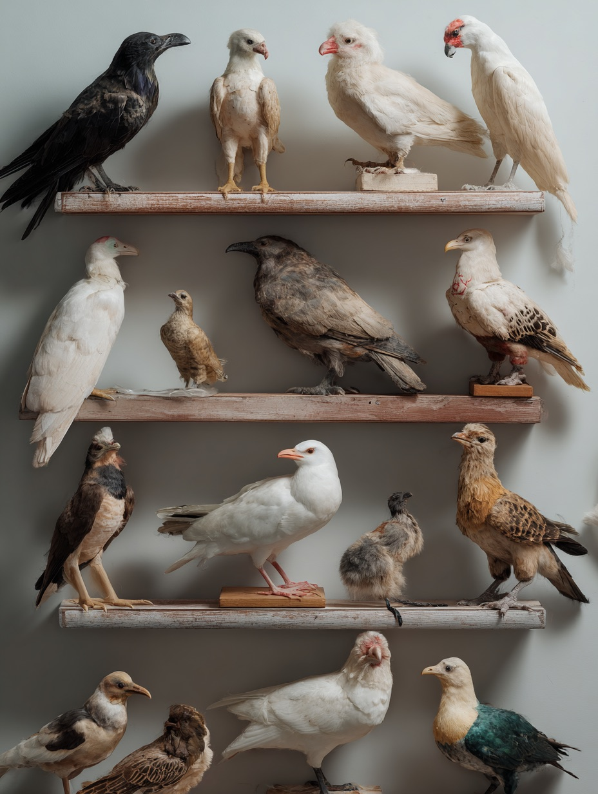
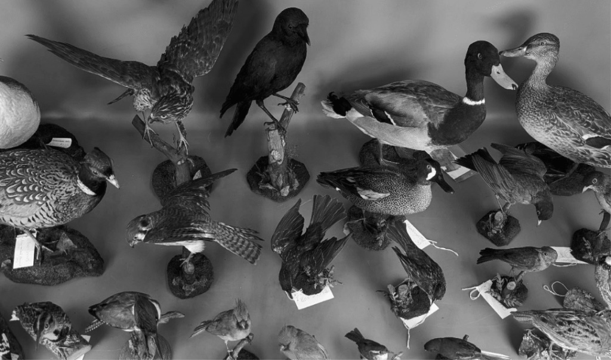

القيّم/ة:
د. نعومي كابلان
אוצרת
ד״ר נעמי קפלן
Curator:
Dr. Naomi Kaplan
Second Nature:
Living, Still, Preserved
الطبيعة الثانية:
حيّ، ساكن، محفوظ
טבע שני:
חי, דומם, משומר
The exhibition examines taxidermy as objects in an in-between state: not alive, yet retaining the appearance of life.
يتناول المعرض الحيوانات المحنطة كأجسام في حالة وسطية: ليست حيّة، لكنها تحتفظ بمظهر الحياة.
התערוכה עוסקת בפוחלצים כאובייקטים הנמצאים במצב ביניים: אינם חיים, אך שומרים על הופעה חיה.
Art. Culture. Inspiration.
فن. ثقافة. إلهام.
אמנות. תרבות. השראה.
The gallery operates as an exhibition space within an everyday passage, presenting rotating, context-based exhibitions on an intimate scale. The works are not detached from the space but embedded within it, enabling a direct and brief encounter with art as part of daily flow.
تعمل المعرض كمساحة عرض داخل ممر يومي، ويقدّم معارض متغيّرة قائمة على السياق وبمقياس حميمي. لا تنفصل الأعمال عن المكان، بل تندمج فيه، وتتيح لقاءً مباشرًا وقصيرًا مع الفن كجزء من المسار اليومي.
הגלריה פועלת כמרחב תצוגה בתוך מעבר יומיומי ומציגה תערוכות מתחלפות, מבוססות הקשר, בקנה מידה אינטימי. העבודות אינן מנותקות מהמרחב אלא נטמעות בו, ומאפשרות מפגש ישיר וקצר עם אמנות כחלק מהרצף היומיומי.
index.gallery@univ.haifa.ac.il
@index.gallery
יצירת קשר
Contact Us
للتواصل
09:00-18:00
א’-ה’
Sun-Thu
الأحد–الخميس
שעות פתיחה
Opening Hours
ساعات الزيارة:
גלריה אינדקס, אוניברסיטת חיפה
INDEX Gallery, University of Haifa
معرض إندكس، جامعة حيفا
מיקום
Location
الموقع
Exhibition Archive
ארכיון תערוכות
أرشيف المعارض